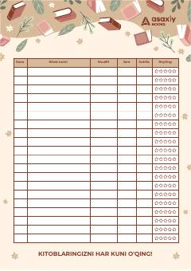

KTO'qilgan kitoblar va reytinglarni qayd etib borish uchun maxsus kitobxonlik trekkeri.
Ushbu nashr kitobxonlarga o'qigan kitoblarini ro'yxatga olish, sana, muallif, janr, sahifa va reyting ma'lumotlarini qayd etib borish imkonini beruvchi amaliy trekkerdir. Asaxiy Books tomonidan tayyorlangan ushbu sahifa kundalik o'qish jarayonini tartibga solish va nazorat qilish uchun mo'ljallangan.